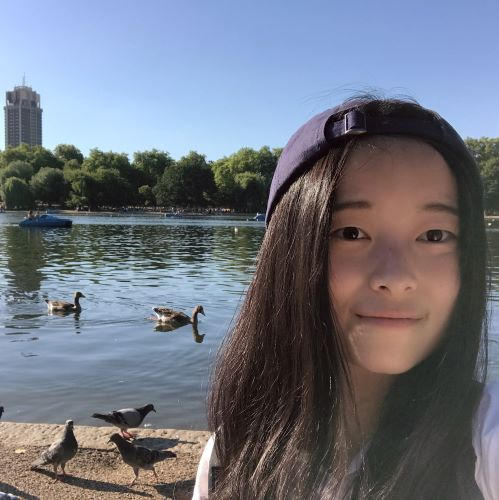

I'm currently a senior undergraduate student at the Department of Biomedical Engineering(Biomedical Imaging Track), Shanghai Jiao Tong University . I am interested in machine learning, data science, computer vision and their applications in healthcare.
Since July 2019, I have been working with Visual Computing Group at Harvard on Instance Segmentation and its applications in Connectomics. Prior to this, I worked on Biomedical Image Analysis with Prof. Qian Wang and Prof. Bingbing Ni. Recently, I joined Intel and work as a deep learning intern.
I am applying to graduate schools this year!
Please reach out via charlotteliu12x [at] gmail[dot] com.
Research
Intrinsic Relevant Convolution for Segmentation(ongoing)
Advisor: Prof. Hanspeter Pfister
[Summary]
Large-scale Mitochondria Segmentation
Advisor: Prof. Hanspeter Pfister& Prof. Jeff Lichtman
[Summary, GitHub]
Neuron Skeletonization and Analysis
Advisor: Prof. Hanspeter Pfister& Prof. Jeff Lichtman
[Summary, GitHub]
3D Lung Nodule Segmentation
Advisor: Prof. Bingbing Ni
[Summary, GitHub]
Brain Multi-class Segmentation
Advisor: Prof. Qian Wang
[Summary, GitHub]
Radiomics Image Analysis System Design
Advisor: Prof. Qian Wang
[Summary, GitHub]
Work
Deep Learning Internship at Intel(ongoing)
Intel Internet of Things Group China, Shanghai
[Summary]
Contests
Modeling Opioid Crisis Based on Cellular Automata and Chi-Square Test
The Mathematical Contest in Modeling - Problem C,
COMAP, 2019
[Summary, Report]
Heat Conduction Model Based on Finite Difference Method
Contemporary Undergraduate Mathematical Contest in Modeling - Problem A,
CSIAM, 2018
[Summary, Report]
Coursework
Filtered Backprojection Algorithm Implementation
Coursework for Biomedical Image Processing II, Spring 2019
[GitHub]
CSAPP-CacheLab: Understanding Cache Memories
Coursework for Computer System Architecture, Spring 2019
[GitHub]
Game 2048 Agent based on AI
Coursework for Machine Learning, Fall 2019
[GitHub]
Fundus Image Segmentation System
Coursework for Biomedical Image Processing I, Fall 2019
[GitHub]
Hobbies
I love travels, sailing, movies, music, books, sea and snow.